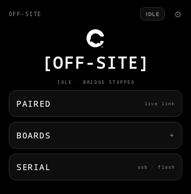
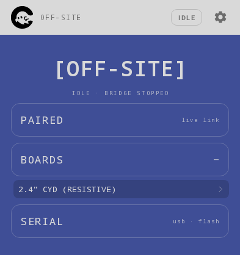
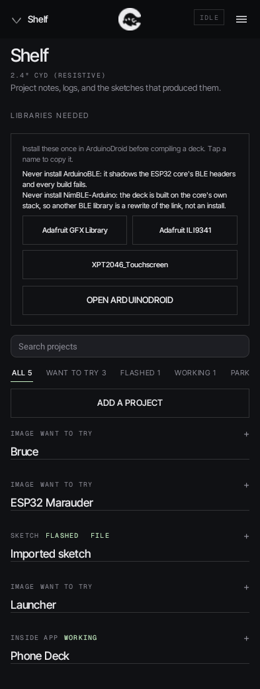
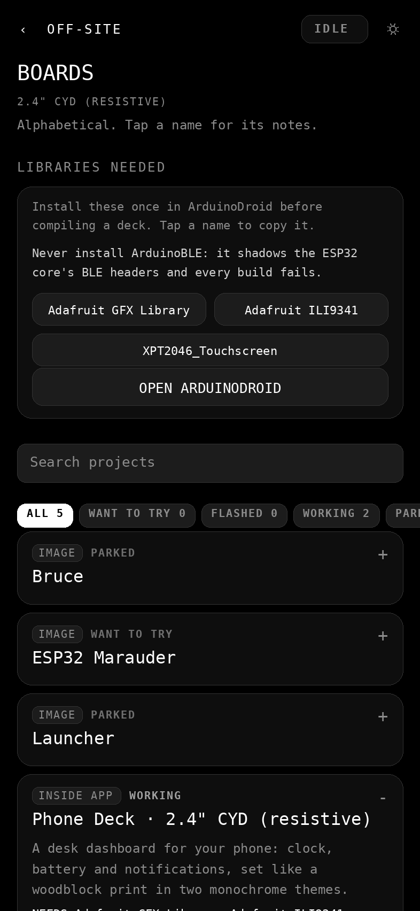
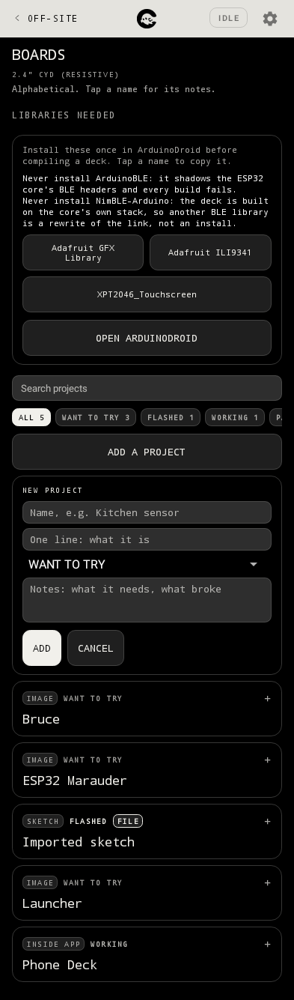
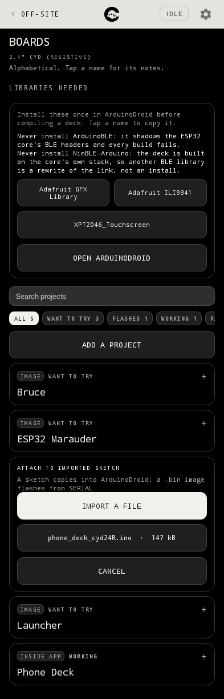
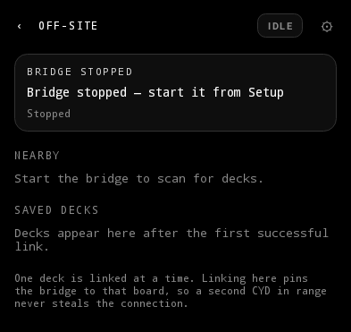
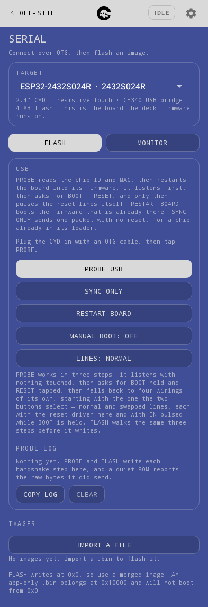
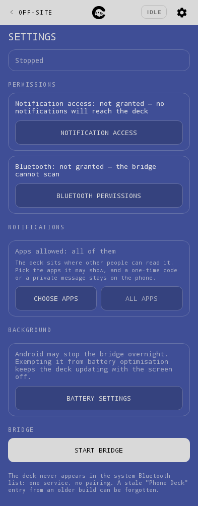
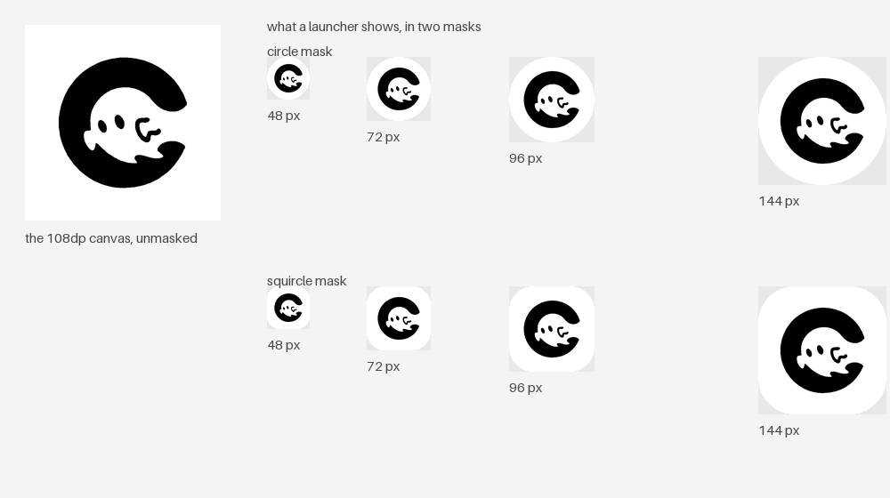

ESP32_Widgets app — the nine screens, and the icon
Drawn by android-companion/render_ui.py from the numbers in
Ui.java: metric-accurate, not device screenshots. Every one of them
is what the tree draws —
check_renders.py compares the pixels and exits 1 when one is stale.

homethe drawer: PAIRED, BOARDS, SERIAL

home-openBOARDS expands to the board alone

projectsthe shelf, alphabetical and folded

projects-openone project's body, log and actions

projects-editthe form: name, tagline, status, notes, and DELETE

projects-filethe picker: what FILES holds, tapped to attach

pairedthe link pill, the deck card, the LAN block

serialthe USB flasher and its sweep

settingsoff the gear, not a fourth row
The launcher icon
The owner's own artwork: four pathData strings copied verbatim,
fitted to the 72dp safe zone, over the white the ghost is cut out of.

48 · 72 · 96 · 144 pxcircle and squircle masks, beside the unmasked canvas